Inventory cost structure
You can save the item cost structure in inventory transactions as miscellaneous charges. You can then review the cost structure on the Cost explorer page. You can change the cost of inventory transactions by using the following functionality:
- Allocate miscellaneous charges from purchase orders and sales orders.
- Adjust the cost of inventory receipts by using the Closing and adjustment periodic operation.
When you allocate miscellaneous charges on a purchase order, inventory settlements are generated. You can then explore receipt inventory transactions in terms of miscellaneous charges codes. To work with the cost of inventory transactions, you must create a miscellaneous charges code for expense inventory transactions. The following system features are available for this purpose:
- Set the Misc. charges structure parameter to allow or disallow the creation of inventory settlements in terms of miscellaneous charges codes.
- Use the Closing and adjustment periodic operation to register a cost adjustment on inventory transactions or on-hand inventory that has miscellaneous charges codes.
- Use the Cost explorer page to view and explore a cost structure in terms of miscellaneous charges codes.
Preliminary setup
Set up the miscellaneous charges structure
Go to Inventory management > Setup > Inventory and warehouse management parameters.
On the General tab, in the Correction section, set the Misc. charges structure option:
- If you set this option to No, one settlement transaction, for the total amount, is generated for each receipt transaction. The miscellaneous charges code isn't entered in the inventory settlement.
- If you set this option to Yes, inventory settlements are generated as miscellaneous charges codes when you post a purchase invoice.
Set up a charges code in Inventory management
Go to Inventory management > Setup > Charges > Charges codes.
Create a charges code. Charges codes that you create in the Inventory management module have the following configuration limitations:
- In the Type field in the Debit section, you can select only Item.
- In the Type field in the Credit section, you can select only Ledger account.
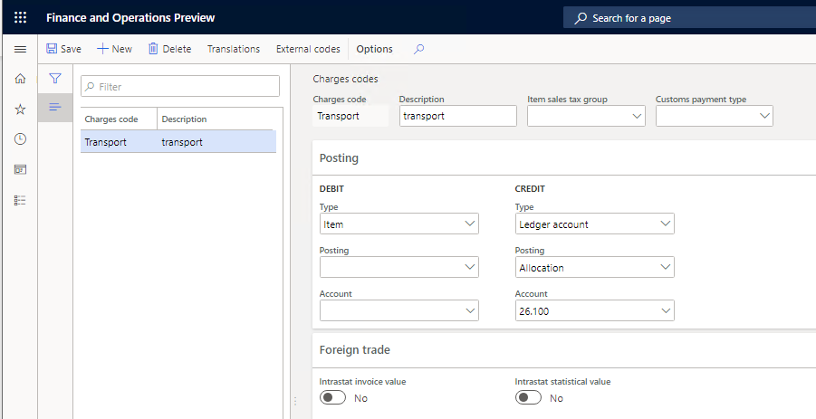
Adjustment of item cost in terms of miscellaneous charges codes
In the Inventory management module, miscellaneous charges can be allocated in several ways:
- Manually adjust on-hand inventory.
- Manually adjust transactions.
- Adjust on-hand inventory or transactions by using a wizard.
You can specify existing miscellaneous charges codes when you adjust item cost on the On-hand, Adjust transactions, and Wizard for cost value adjustment of inventory transactions or entire on-hand inventory pages.
Close inventory
Before you adjust on-hand inventory, you must close the inventory. For more information about inventory closing, see Inventory close.
Go to Inventory management > Periodic tasks > Closing and adjustment.
On the Action Pane, select Close procedure > Close inventory.
In the Close inventory dialog box, in the Close inventory up to field, specify the date that the inventory will be closed by.
In the Specification field, select All.
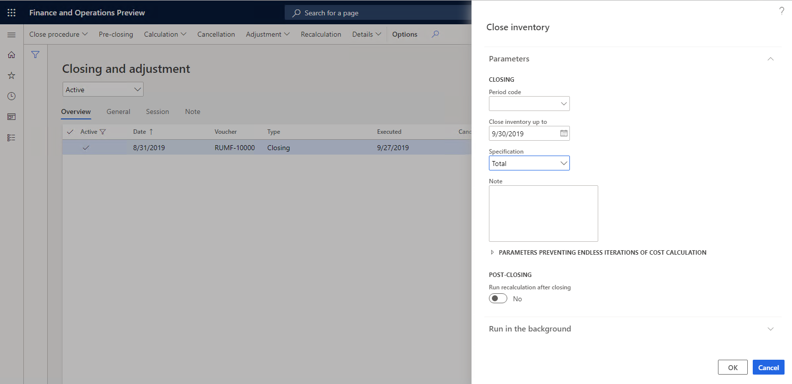
Select OK.
Cancel inventory closing
Before you can adjust transactions, you must verify that the inventory wasn't closed.
- Go to Inventory management > Periodic tasks > Closing and adjustment.
- Select the inventory closing operation, and then, on the Action Pane, select Cancellation.
- In the Cancellation – initialize dialog box, select OK.
Adjust on-hand inventory
For more information about the adjustment of on-hand inventory, see Adjust on-hand inventory cost values.
Close the inventory as described in the Close inventory section earlier in this topic.
Go to Inventory management > Periodic tasks > Closing and adjustment.
On the Action Pane, select Adjustment > On-hand.
On the Action Pane, select Select.
In the Select on-hand inventory dialog box, specify the inventory dimensions that should be shown after the adjustment is done.
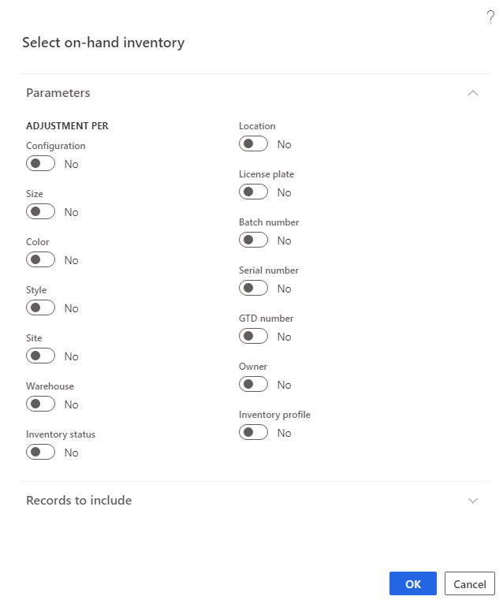
Select OK. The On-hand page shows the inventory lines that you selected for adjustment, together with the specified inventory dimensions.
Select the line for an item, and then, in the Charges code field, select a charges code for the item. The selected miscellaneous charge code is entered in the inventory settlement after the adjustment is posted.
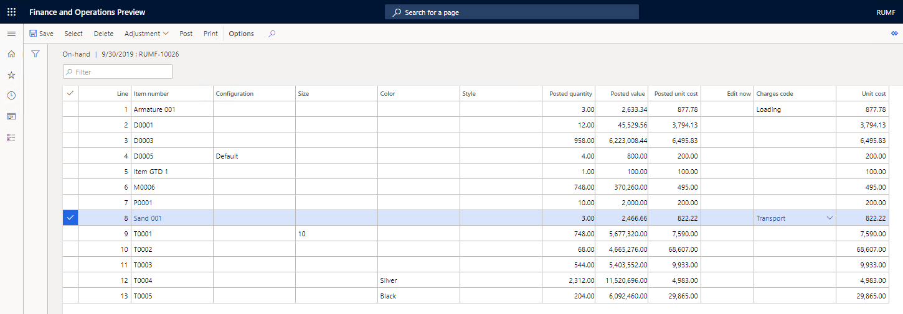
To enter the charges code on all lines of the On hands page, on the Action Pane, select Adjustment > Charges code.
In the Change Misc. charge code dialog box, set the following values:
- In the Charges code field, select a charges code.
- Set the Apply to all option to Yes. If this option is set to No, the value in the Charges code field will be adjusted only on the line that is selected on the On hands page.
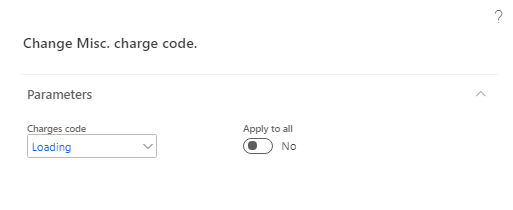
Select OK.
On the Action Pane, select Post.
In the Adjustment of on-hand inventory dialog box, in the Specification field, select how transaction adjustments are posted:
- Total – Adjustments are posted for all items that have the same settings in the posting profile.
- Item group – Adjustments are posted for all items that have the same item group.
- Item number – Adjustments are posted for each item.
In the Note field, enter a note about the adjustment.
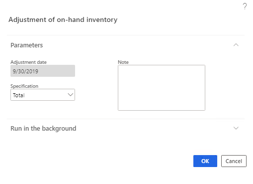
Select OK to post the adjustment.
When you post an adjustment, the general ledger offset account is defined in the following way:
- If the miscellaneous charges code is entered on the item line, the adjustment is posted to the offset account that is set up for the miscellaneous charges code.
- If the miscellaneous charges code isn't entered on the item line, the adjustment is assigned to the offset profit or loss account that is set up on the Inventory tab of the Posting page (Inventory management > Setup > Posting > Posting).
Adjust transactions
Verify that the inventory wasn't closed. If it was closed, cancel the inventory closing as described in the Cancel inventory closing section earlier in this topic.
Go to Inventory management > Periodic tasks > Closing and adjustment.
On the Action Pane, select Adjustment > Transactions.
On the Action Pane, select Select.
In the Adjust transactions dialog box, specify selection criteria for the inventory receipt transactions that must be adjusted, and then select OK.
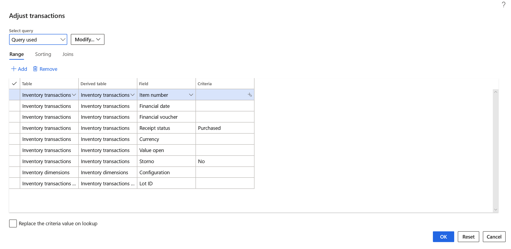
Select charges codes for items, and post the adjustment, as described in the Adjust on-hand inventory section earlier in this topic. The general ledger offset account will be defined according to the same principle.
Use a wizard to adjust item cost
For more information, see Inventory adjustment wizard.
Go to Inventory management > Periodic tasks > Closing and adjustment.
On the Action Pane, select Adjustment > Wizard.
On the Welcome page, select Next.
On the Method of cost value adjustment page, select the method of adjustment:
- On-hand – Adjust on-hand inventory.
- Transactions – Adjust transactions.
Select Next. Either the Select on-hand inventory page or the Adjust transactions page appears, depending on the method of adjustment that you selected.
Specify selection criteria, and then select OK.
On the Selection result page, review the items or item transactions that have been selected for adjustment, and then select Next.
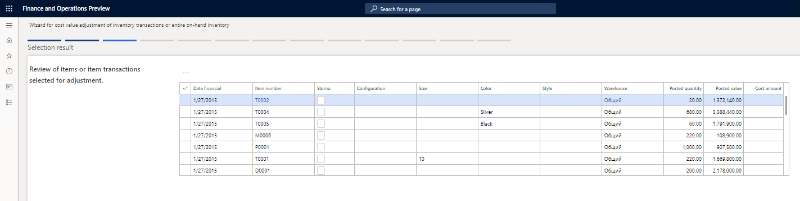
On the Functions for calculating adjustment amounts page, select the method for calculating adjustment amounts, and then select Next.
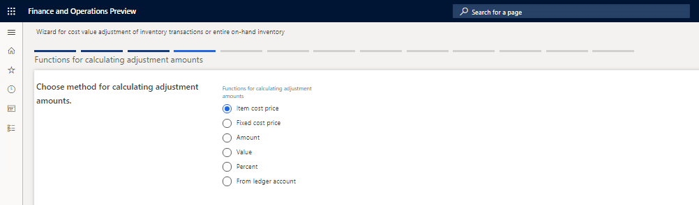
On the Results of allocation page, review the allocation results. In the Charges code field, select a charge code for a line.
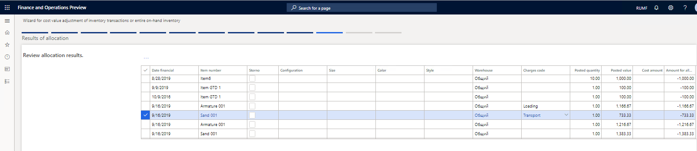
Select Next.
On the Posting page, specify the details for posting the adjustment:
In the Adjustment date field, specify the date of the adjustment.
In the Specification field, select how transaction adjustments are posted:
- Total – Adjustments are posted for all items that have the same settings in the posting profile.
- Item group – Adjustments are posted for all items that have the same item group.
- Item number – Adjustments are posted for each item.
Set the Corr. account profit/loss option and the Corr. account field, depending on the account that an adjustment should be assigned to during posting:
- If the miscellaneous charges code is entered on the item line, the adjustment will be assigned to the offset account that is set up for the miscellaneous charges code.
- If the miscellaneous charges code isn't entered on the item line, and if the Corr. account profit/loss option on the Posting page is set to Yes, the adjustment will be assigned, in the usual way, to the offset profit or loss account that is set up on the Inventory tab of the Posting page (Inventory management > Setup > Posting > Posting).
- If the miscellaneous charges code isn't entered on the item line, and if the Corr. account profit/loss option on the Posting page is set to No, the adjustment will be assigned to the account that is specified in the Corr. account field.
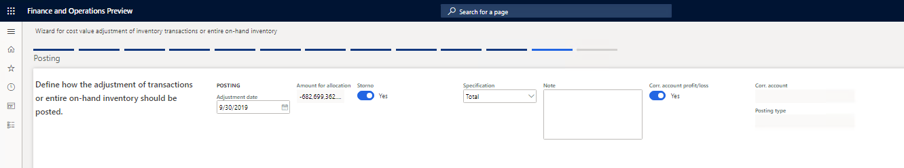
- Select Next.
- On the Finish page, select the Show ledger voucher list check box to show the ledger voucher list.
- Select Finish to post the adjustment.
View item cost structure in the inventory settlements and cost explorer
On the Settlements page, you can view inventory cost adjustment transactions. As a result of inventory closing, receipt transactions are settled against issue transactions. After inventory closing is completed, you can open the Cost explorer page to view and explore the item cost structure in terms of miscellaneous charges.
Close the inventory as described in the Close inventory section earlier in this topic.
Go to Product information management > Products > Released products.
On the Released products details page, select an item, and then, on the Action Pane, on the Manage Costs tab, in the Cost transactions group, select Transactions.
On the Inventory transactions page, select the transaction on the receipt item that you want to explore the cost structure for. Then, on the Action Pane, on the Inventory tab, in the Costing group, select Settlements.
On the Settlements page, review the following information:
The Charges code field shows the miscellaneous charges code that has been allocated to the item receipt transaction.
The Vendor account field shows the account of the vendor that the miscellaneous charges were bought from. For more information about how to buy miscellaneous charges from a third-party vendor, see Third party miscellaneous charges.
The Invoice field shows the invoice number of the miscellaneous chargespurchase.
Note
If the Vendor account and Invoice fields are blank, the standard method of miscellaneous charges allocation was used to perform the cost adjustment operation.
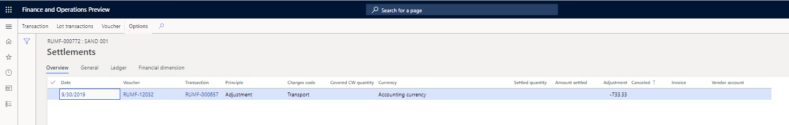
On the Inventory transactions page, on the Action Pane, on the Inventory tab, in the Costing group, select Cost explorer.
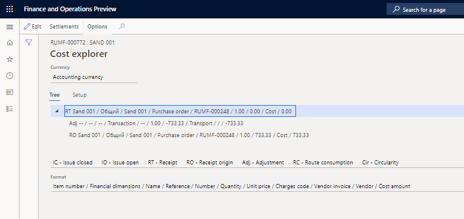
On the Settlements and Cost explorer pages, the miscellaneous charges codes that have the Item debit type and the Ledger account credit type are shown as a separate line. The miscellaneous charges codes that have other debit and credit types are included in the item cost price as direct charges (standard functionality). They aren't allocated on the Settlements page. Therefore, they aren't shown as a separate line on the Cost explorer page.
If the Charges code field on the Settlements page isn't set, a charges code won't be shown on the Cost explorer page. If the Charges code field on the Settlements page is set, the charges code will be shown as a separate line on the Cost explorer page.